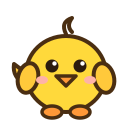
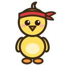
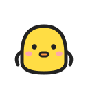
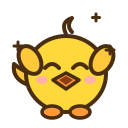
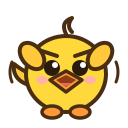
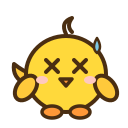
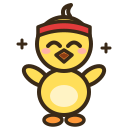
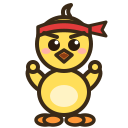
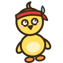
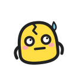

 |  |  | |||
| 方向 A · 圆胖 Q 版 | 方向 B · 拟人站姿 | 方向 C · 梗图感扁平 | |||
|---|---|---|---|---|---|
身体一体成蛋圆形,大头大眼、短翅膀短脚,脸颊腮红。最萌、最「吉祥物」,32px 下轮廓最可读;适合主线演出、Q 版小剧场与周边表情包。
合规说明:无穿戴签名物;头顶一根呆毛为单根羽毛卷,不是发型指向。
| 表情 / 尺寸 | 128px | 64px | 32px | |||
|---|---|---|---|---|---|---|
| 亮底 | 暗底 | 亮底 | 暗底 | 亮底 | 暗底 | |
平静 idlechick_idle.svg | ||||||
开心 happychick_happy.svg |  | |||||
上头 hypedchick_hyped.svg |  | |||||
破防 brokenchick_broken.svg |  | |||||
SVG 源:direction-a-round/ 下的 chick_idle.svg · chick_happy.svg · chick_hyped.svg · chick_broken.svg(viewBox 128×128,矢量无损缩放;32px 档为小尺寸可读性预览,量产时按 docs/ai-asset-import-rules.md 重新导出位图)
头/身/四肢分离,明确站姿,红色运动头带+拳脚姿态。最能承载坤拳招式演出(化坤手/坤闪靠/风神腿),格斗、斗舞、膳堂投掷关表现力最强;32px 细节偏多,量产时需出简化档。
合规说明:头带为通用体育配件(非头饰发型);刻意无背带裤、无篮球、无舞蹈动作。
| 表情 / 尺寸 | 128px | 64px | 32px | |||
|---|---|---|---|---|---|---|
| 亮底 | 暗底 | 亮底 | 暗底 | 亮底 | 暗底 | |
平静 idlechick_idle.svg | ||||||
开心 happychick_happy.svg |  | |||||
上头 hypedchick_hyped.svg |  | |||||
破防 brokenchick_broken.svg |  | |||||
SVG 源:direction-b-standing/ 下的 chick_idle.svg · chick_happy.svg · chick_hyped.svg · chick_broken.svg(viewBox 128×128,矢量无损缩放;32px 档为小尺寸可读性预览,量产时按 docs/ai-asset-import-rules.md 重新导出位图)
粗描边+极简五官,坐地蛋形身,死鱼眼/裂纹/汗滴全走贴纸语言。梗图传播性最强、最「沙雕」,适合表情包与社交传播;演出层级表现弱于 A/B。
合规说明:纯几何扁平,无任何配件与动作指向。
| 表情 / 尺寸 | 128px | 64px | 32px | |||
|---|---|---|---|---|---|---|
| 亮底 | 暗底 | 亮底 | 暗底 | 亮底 | 暗底 | |
平静 idlechick_idle.svg | ||||||
开心 happychick_happy.svg | ||||||
上头 hypedchick_hyped.svg | ||||||
破防 brokenchick_broken.svg |  | |||||
SVG 源:direction-c-flat/ 下的 chick_idle.svg · chick_happy.svg · chick_hyped.svg · chick_broken.svg(viewBox 128×128,矢量无损缩放;32px 档为小尺寸可读性预览,量产时按 docs/ai-asset-import-rules.md 重新导出位图)
挑选流程(用户拍板后):选定方向 → 按 docs/art-tools.md 工作流批量出四态+动作 → 过 docs/ai-asset-import-rules.md 导入规则 → 按 docs/asset-naming-conventions.md 命名进正式资产目录(届时清掉本候选目录)。本页双击即可打开,无外部依赖。